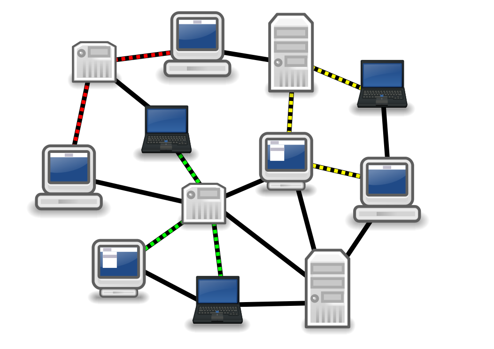

Clay
OpenVNet + OpenVDC + Terraform
=
Automatic Network infrastructure testing
Who are we
Axsh Co LTD
We specialize in:
- Open Source
- Virtualization
- DevOps
We have sponsored this group since 2013
used to be Wakame Users Group
Currently Tokyo Open Infra Users Group
Today's topic: Clay
Agenda
- What problem are we solving?
- How do we solve it?
- Live demo
- Underlying technology
- Git
- Terraform
- OpenVDC
- OpenVNet
What problem are we solving?
Imagine a production network
These are often very complicated.
Many devices are involved.
Hubs, switches, routers, firewalls.
When one devices changes, what happens?